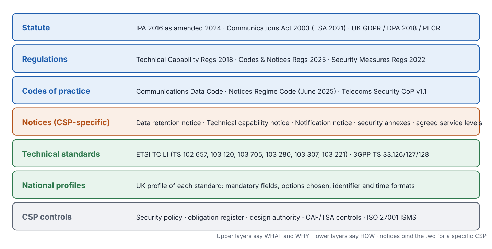
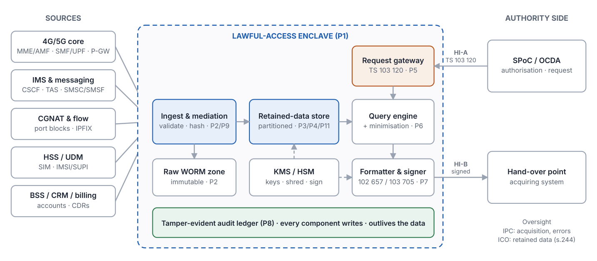
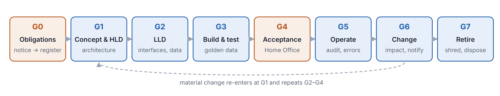

Part A
Foundations
A1. How to use this handbook
This handbook does two jobs. Part B is a requirements catalogue: 103 numbered requirements in 12 domains, each traced to its source and graded. It is the checklist a design must satisfy. Part C and the "How a capable architect achieves it" notes in each domain say how those requirements are met in real systems, as vendor-neutral patterns with example technologies. Part D turns both into a governance lifecycle: gates, artefacts and review questions.
Requirement levels
M Must. Derived from statute, regulations, a notice obligation, or a code-of-practice requirement. Non-compliance is a legal or notice breach.
E Expected. Code-of-practice guidance, standards conformance, or what the Home Office and oversight bodies will normally expect to see. Departures need a documented rationale and agreement.
G Good practice. This handbook's recommendation from experience of building assurable systems. Deviations are fine if the underlying obligation is met another way.
Source abbreviations
IPA | Investigatory Powers Act 2016, as amended by the Investigatory Powers (Amendment) Act 2024 |
TCR | Investigatory Powers (Technical Capability) Regulations 2018 (SI 2018/353), Schedule 2 Part 1 — obligations for Part 3 CD authorisations |
NRC | Notices Regime Code of Practice (Home Office, June 2025) — Part 4 retention, TCNs, notification notices |
CDC | Communications Data Code of Practice (Home Office, June 2025) — Part 3 acquisition |
TSR | Electronic Communications (Security Measures) Regulations 2022 and Telecommunications Security Code of Practice v1.1 (July 2026) |
UKGDPR | UK GDPR, Data Protection Act 2018 and PECR 2003 (regs 7–8, traffic and location data) |
ETSI | ETSI TC LI / 3GPP SA3-LI specifications (register in Annex B) |
NOTICE | The CSP's own data retention notice and technical capability notice, including any security annex and agreed service levels (not public) |
GP | Good practice recommended by this handbook |
Two limits to keep in mind. First, each CSP's notices and their security annexes are confidential and specific; they can add to, tighten or vary everything here, and they take precedence. Treat this catalogue as the public baseline that your notice-specific register extends. Second, paragraph numbers cite the June 2025 codes and SI 2018/353 as published; check the live versions before relying on a citation in a formal document.
A2. The obligation stack
Requirements reach a CSP through layers. Statute and regulations set what may be required and the outer limits; codes of practice explain how the Home Office expects powers and duties to be exercised; notices bind a specific operator to specific obligations; standards and national profiles say how interfaces are built; and the CSP's own controls make it real. A governance architect's first job is to make that chain explicit for their capability, so every design decision can point upward to an obligation.

Key changes since 2024 that affect designs
- June 2025 codes. Part 4 retention guidance (including security, integrity and destruction of retained data) moved out of the Communications Data Code and into the new Notices Regime Code of Practice. Design documents citing "CD Code ch.19" are citing a superseded structure.
- Crypto-shredding explicitly recognised. The Notices Regime Code accepts crypto-shredding where overwriting cannot be verified, as in cloud, and sets conditions: KMS-generated keys, customer control of rotation, revocation and deletion, regular rotation, operator-exclusive keys, strong algorithms. This makes cloud-hosted retention stores designable against a clear standard.
- ICR condition D. From 14 October 2024, IPA s.62 allows ICR access for target detection (identifying who used specified internet services in a period) for the intelligence services and NCA. For the CSP this means a reverse query shape — service to user — that needs its own index, performance budget and minimisation design.
- Notification notices. IPA s.258A–258B allow the Secretary of State to require notice of proposed changes to services and systems. Combined with TCR paragraph 13, change impact assessment is now unambiguously a design-governance duty.
- Telecoms Security Code v1.1 (July 2026). The revised code updates guidance and extends some implementation deadlines; the lawful-access enclave should be mapped to the CSP's TSA controls at its tier.
A3. The thirteen capability obligations
Schedule 2, Part 1 of the Technical Capability Regulations 2018 lists the obligations a technical capability notice may impose for Part 3 communications data. They are the closest thing in UK law to a functional specification for a disclosure capability, and every requirement in Part B can be traced to at least one of them or to the retention provisions in Part 4. The paraphrases below are summaries; read the SI for exact wording.
| Para | Obligation (paraphrased) | Requirements in this handbook |
|---|---|---|
1 | Obtain and disclose CD without undue delay, within the period set in the TCN or agreed | DIS-01, RES-04 |
2 | Provide, modify, test, develop and maintain the apparatus, systems, facilities and services needed | RES-02, TST-01 |
3 | Meet the specified level of reliability | RES-01, INT-05 |
4 | Obtain and disclose all CD covered by an authorisation | DIS-02, INT-08 |
5 | Transmit to a hand-over point at specified service levels | DIS-03 |
6 | Make clear which request each disclosure responds to | DIS-04, AUT-02 |
7 | Hand-over interfaces comply with applicable industry standards or notice requirements | DIS-05, AUT-09, DIS-13 |
8 | Disclose only the data authorised, where reasonably practicable | DIS-06, AUT-10 |
9 | Disclose in intelligible form; remove protection applied by or for the operator | DIS-07 |
10 | Install and maintain apparatus provided by or for the Secretary of State | RES-07 |
11 | Capability auditable: disclosed data matches authorisation; integrity reasonably assured | AUD-01, AUD-03, INT-01 |
12 | Minimise risk of unauthorised persons learning of protected matters; meet specified security standards | SEC-10, SEC-02, GOV-06 |
13 | Notify the Secretary of State of proposed service or system changes and new services | CHG-01, CHG-02 |
Paragraph 7 is the hook for ETSI: a notice can require hand-over interfaces to follow an industry standard. That is how TS 102 657, TS 103 120 and TS 103 705 move from "good idea" to obligation for a given CSP.
A4. Reference architecture
The architecture below is the shape almost every assurable retained-data disclosure capability converges on, whatever the technology. It is a reference for review: when a design departs from it, ask which obligation the departure serves, and how the requirement each missing component would have satisfied is met instead. Pattern numbers (P1–P15) refer to Part C.

Six architectural principles
- One way in, one way out. All requests through the gateway, all results through the formatter. Side channels are where audit gaps and unauthorised disclosures happen.
- Authority before data. Validation completes and is logged before any query runs.
- Immutable evidence. Raw data, deliveries and audit are write-once; everything else can be re-derived from them.
- Deletion by design. Partition and key scopes match retention scopes, so deletion is a provable whole-unit operation.
- Time is a first-class key. Every identifier is resolved as at a point in time; every clock is disciplined.
- Declare, don't hide, gaps. Missing feeds, partial results and limits of the data are reported with the result.
The live route (forward-looking events via X1/X2 and HI2) shares the gateway, audit and security model but uses an ADMF/LIPF and mediation chain rather than the store. Where a notice requires it, apply the same domains — notably DIS-13, SEC-13 and pattern P13. See the companion ETSI/3GPP reference for that architecture.
Part B
Requirements catalogue
B1. Governance and accountability GOV
Who owns the capability, who signs off its design, and how obligations are kept current. Most later failures trace back to an unclear owner or an obligation register that drifted from the notice.
| ID | Requirement | Source | Lvl |
|---|---|---|---|
GOV-01 | A single named senior owner is accountable for the lawful-access capability (retention, disclosure and any live capability), with authority over the platform, the operations team and the budget. | NRC ch.5 (security policy, escalation to senior management); TSR (board accountability) | M |
GOV-02 | An obligation register lists every requirement the capability must meet, traced to its source: Act section, regulation paragraph, code paragraph, notice clause, standard clause. It is version-controlled and reviewed at least annually and on any notice variation. | TCR para 1–13; NOTICE; GP | E |
GOV-03 | A documented security policy and security operating procedures exist for the retention and disclosure systems and are reviewed regularly. | NRC 5.21–5.23 | M |
GOV-04 | Information security risk is assessed for the whole capability, including third-party, supplier and cloud arrangements, and the risk register is owned and reviewed. | NRC 5.21–5.23; TSR | M |
GOV-05 | A design authority (or equivalent) approves every design change touching the capability; the governance architect has a defined right to block changes that break traceability to an obligation. | GP | G |
GOV-06 | The existence and contents of any notice are known only to people who need to know; permitted disclosures (system suppliers, legal advisers, oversight bodies) are recorded. | IPA s.95, s.255; NRC 10.16–10.19 | M |
GOV-07 | A Data Protection Impact Assessment covers the retained data and disclosure processing, and records the legal basis (legal obligation) and the restriction on other uses. | UKGDPR Art 6(1)(c), Art 35; NRC 6.4 | E |
GOV-08 | Roles are mapped in a RACI covering: notice owner, design authority, security, operations, disclosure team, data protection officer, Home Office liaison. | GP | G |
How a capable architect achieves it
Run the capability as a regulated product, not a project. Give it a product owner (GOV-01), a backlog, and a standing design authority that meets monthly and on demand.
Build the obligation register (GOV-02) as structured data, not a Word table: one row per obligation with fields for source, clause, paraphrase, level, owning component, verifying test and evidence location. Annex E of this handbook is a starting index; the notice-specific rows come from the CSP's own notices.
Make the register the spine of every design document. Each HLD/LLD section cites the obligation IDs it satisfies; each test case cites the IDs it verifies. A requirement with no design element or no test is a gap; a design element with no requirement is scope creep, or an undocumented obligation.
Hold notices and their security annexes in a restricted repository with access logging. Design documents reference notice clauses by identifier rather than reproducing them.
Evidence to ask for
- Signed terms of reference for the owner and the design authority
- Obligation register with change history and last-review date
- Security policy, security operating procedures and risk register
- DPIA and record of processing
- RACI
Common failure modes
- Obligation register built once for the first accreditation and never updated after a notice variation
- Design authority with no right to say no
- Notice text copied into widely circulated design documents
B2. Authorisation, request intake and validation AUT
Every disclosure must begin with a request the CSP can authenticate and tie to a lawful authorisation. This is where the CSP protects itself from being the weak link in someone else's process.
| ID | Requirement | Source | Lvl |
|---|---|---|---|
AUT-01 | Requests are received only through agreed channels; each request is authenticated as coming from a genuine authority (e.g. SPoC credentials validated through the Home Office authentication service) before any data is queried. | CDC 4.4, 5.30; TCR para 12 | M |
AUT-02 | Each request carries, and the CSP records, a unique authorisation reference and request reference; the CSP can verify the authorisation's authenticity where no SPoC is involved. | CDC 5.30; TCR para 6 | M |
AUT-03 | Validation checks run and are logged before execution: authorisation in date, data type requested within the authorisation (entity vs events), identifiers and time window within scope, ICR conditions where ICRs are requested. | IPA s.60A, s.61, s.62; CDC 2.49–2.52; GP | E |
AUT-04 | Urgent oral authorisations are supported: the SPoC's identifier and the unique reference are captured, numbers are read back, and receipt of the written notice within one working day is tracked; non-receipt is raised as a possible error. | CDC 5.47–5.55 | M |
AUT-05 | Urgent authorisations under s.61A are treated as lapsing after three days unless renewed; the system enforces the expiry. | CDC 5.55; IPA s.61A | M |
AUT-06 | Threat-to-life and emergency requests have a defined fast path with its own service level, staffed 24×7 where the notice requires, with any departure from normal practice logged and proportionate. | CDC 5.42; NOTICE | E |
AUT-07 | Cancellation and amendment of a request are processed promptly, stop any in-flight work, and are logged against the original request. | CDC ch.7; ETSI TS 103 120 (Notification, task status) | E |
AUT-08 | Requests that cannot be met (data not held, out of retention, not CD, third-party data not reasonably practicable to obtain) are answered with a reasoned status rather than silence. | CDC 2.98–2.101; ETSI TS 102 657 / TS 103 120 status codes | E |
AUT-09 | Electronic request interfaces implement ETSI TS 103 120 (authorisation and LD task objects) or the nationally agreed equivalent, at a declared version and UK profile. | TCR para 7; ETSI TS 103 120 | E |
AUT-10 | Count queries return only a count of unique entities, release no communications data, and reject compound or wildcard sequences that could reconstruct retained data. | CDC 5.8, 5.13–5.16 | M |
How a capable architect achieves it
Put a request gateway in front of the retained-data store and make it the only path in. The gateway terminates TS 103 120 (or the UK equivalent), authenticates the requester with mutual TLS plus the Home Office credential service, and writes an immutable intake record before anything else happens.
Express validation as policy-as-code (for example Open Policy Agent rules or a rules engine) rather than as conditions buried in query code. The rule set itself becomes a governed artefact: reviewable, versioned, testable with golden requests.
Model a request as a state machine — received → authenticated → validated → queued → executing → delivered / partially delivered / refused / cancelled → closed — and persist every transition. TS 103 120 notification objects map naturally onto these states.
Give manual and urgent channels (telephone, oral authorisations) a structured capture screen that writes into the same state machine, so the audit trail is identical whatever the channel.
For count queries, run the query inside the enclave and return only the integer; rate-limit and pattern-detect sequential wildcard queries.
Evidence to ask for
- Interface control document naming TS 103 120 version and UK profile
- Policy rule set with unit tests and coverage report
- State-machine definition and sample audit trails for each terminal state
- Urgent-request procedure and drill records
Common failure modes
- Validation happening after the query has run (data has already been processed without authority)
- Email or portal side-channels that bypass the gateway
- Oral authorisations recorded in a spreadsheet rather than the system of record
B3. Retention scope and lifecycle RET
What is kept, from which source, for how long, and from what start point. The retention notice defines this; the architecture must make it provable.
| ID | Requirement | Source | Lvl |
|---|---|---|---|
RET-01 | Only relevant communications data specified in the data retention notice is retained under the notice; the retained-data catalogue maps every field to a notice clause. | IPA s.87; NRC 2.15 | M |
RET-02 | Retention periods do not exceed the notice period, and never 12 months. | IPA s.87(3); NRC 4.22, 4.31–4.32 | M |
RET-03 | Retention clocks start at the correct point: individual communications from the day of the communication; long sessions from the day the session ends; subscriber data from when the entity leaves the service or the data changes; other data from when it comes into existence. | NRC 4.34–4.37 | M |
RET-04 | Data needed to correlate records (e.g. customer reference numbers) is retained where the notice requires it. | CDC 2.89 | M |
RET-05 | Data held only under a notice is used only for connected purposes; any business use has documented Home Office permission. | NRC 6.4 | M |
RET-06 | Each retained data category is classified at field level as entity data or events data, with ICR fields identified, and the classification is change-controlled. | IPA s.261; CDC 2.49–2.52, 2.91–2.97; GP | E |
RET-07 | Business data that exists independently of the notice (billing, CRM, network logs) is distinguished from data retained only because of the notice, with separate lifecycle rules. | NRC 4.38, 6.4; UKGDPR /PECR regs 7–8 | E |
RET-08 | Roaming and wholesale scenarios covered by the notice are explicitly in or out of the catalogue. | CDC 2.103–2.104 | E |
How a capable architect achieves it
Maintain a retained-data catalogue: one row per field, with source system, source field, notice clause, IPA classification (entity / events / ICR), retention start event, retention period, deletion mechanism and owning team. This is the single most useful artefact a governance architect can insist on.
Partition the store by retention start date (daily or monthly partitions). Deletion then becomes dropping or crypto-shredding whole partitions, which is verifiable — far better than row-level deletes scattered through tables.
For subscriber data, keep history as bitemporal records (valid-from/valid-to plus recorded-at). The retention clock for a superseded version starts when it was superseded, so each version carries its own expiry date.
Keep notice-only data physically or logically separate from business data so that RET-05 can be enforced by access control rather than by policy alone.
Evidence to ask for
- Retained-data catalogue with notice-clause traceability
- Partitioning and expiry design
- Sample of records showing computed expiry dates for each start-point rule
- Access model separating notice-only data
Common failure modes
- One retention period applied to subscriber records from creation date (keeps changed data too short or current data too long)
- Retaining fields 'because they were in the feed' that the notice does not cover
- Notice-only data copied into analytics platforms
B4. Data capture, integrity and quality INT
Retained data must be a faithful reproduction of the business data and stay that way. For the authority, an incomplete or mistimed record is worse than none, because it looks authoritative.
| ID | Requirement | Source | Lvl |
|---|---|---|---|
INT-01 | Retained data is a faithful reproduction of the source business data, and remains so through copying, transformation, search and disclosure. | IPA s.92; NRC 5.14–5.18 | M |
INT-02 | Retained data is of the same integrity as, and at least as secure as, the system it came from. | IPA s.92; NRC 5.1 | M |
INT-03 | Technical controls prevent modification of retained data, and any attempted modification is audited. | NRC 5.14–5.18 | M |
INT-04 | Data is validated on ingest (schema, mandatory fields, value ranges) with rejects quarantined and reported, never silently dropped. | NRC 5.31; GP | M |
INT-05 | Feed completeness is monitored per source: expected volume, sequence gaps, latency; a missing or late feed is alarmed and recorded as a known gap that is reported with any affected disclosure. | TCR para 3, 11; GP | E |
INT-06 | All producing systems, the store and the disclosure platform are time-synchronised to a traceable reference within a stated tolerance; timestamps are stored and delivered in UTC with explicit format. | ETSI TS 103 280; GP | E |
INT-07 | Identifier lifecycles are modelled (SIM swap, IMEI change, number port, dynamic and shared IP, CGNAT port blocks, SUCI→SUPI resolution) so that queries resolve an identifier as at the time asked about. | ETSI TS 102 657 / TS 33.128; GP | E |
INT-08 | Each retained category is traced to its producing network function(s) and the gaps are stated (e.g. location absent from some records; NSA 5G events sourced from the EPC). | 3GPP TS 33.127 / 33.128; GP | E |
INT-09 | Transformations from source to retained format are specified, versioned and regression-tested against reference data. | GP | G |
How a capable architect achieves it
Write-once ingest: land raw feeds unchanged in an immutable zone (object storage with retention lock /WORM), compute a hash per file or batch, and chain those hashes in an append-only ledger. The normalised store is derived from the raw zone, so any record can be re-derived and checked.
Treat completeness as a measured service: a feed monitor keeps per-source expected-volume baselines and sequence counters, and raises a 'known gap' record when thresholds are breached. Disclosure queries join against the known-gap table and add a caveat to any response whose time window overlaps a gap.
Clock discipline: NTP or PTP from a traceable source, monitored drift per host, and an alarm on breach of tolerance. Record the tolerance in the interface specification so the authority can reason about it.
Store identifier bindings as time-bounded relations (IMSI↔MSISDN valid-from/valid-to; public IP:port-block↔subscriber valid-from/valid-to). Queries always carry a time and join on validity intervals, never on the identifier alone.
Golden datasets: a synthetic but realistic test corpus with known answers for every category and identifier-change scenario, run on every release.
Evidence to ask for
- Ingest design showing immutable raw zone and hash ledger
- Feed-monitor dashboards and known-gap register
- Clock-sync design and drift reports
- Identifier-binding data model
- Golden-dataset regression results
Common failure modes
- Deduplication or 'cleansing' steps that alter source values
- CGNAT logs with coarser time resolution than session records, making joins ambiguous
- Feed failures discovered only when a disclosure comes back empty
B5. Deletion, destruction and disposal DES
At the end of its retention period data must become impossible to access, and the CSP must be able to prove it.
| ID | Requirement | Source | Lvl |
|---|---|---|---|
DES-01 | Data is destroyed at the end of its retention period so that it is impossible to access, unless its retention is otherwise authorised by law. | IPA s.92; NRC 5.43 | M |
DES-02 | Deletion runs at intervals no greater than monthly, and as soon as practicable after expiry; deletion is verifiable. | NRC 5.43, 8.46 | M |
DES-03 | Where overwriting or physical destruction cannot be verified (e.g. cloud), crypto-shredding is used with keys from a key management service, customer control of rotation, revocation and deletion, regular rotation, keys exclusive to the operator, and strong algorithms. | NRC 5.44–5.46 (8.47–8.49) | M |
DES-04 | Non-cloud deletion resists non-invasive recovery where physical access is controlled; otherwise requirements are agreed case by case with the Home Office. | NRC 5.47–5.48 | M |
DES-05 | Equipment is sanitised before reuse (government-approved overwriting product; crypto-shredding in cloud), held securely if not reused immediately, and physically destroyed at final disposal. | NRC 5.49–5.51 | M |
DES-06 | Backups, replicas, caches, extracts and any other copies are within scope of deletion and disposal. | NRC 5.52 | M |
DES-07 | Delivered result sets held by the CSP after disclosure have a defined, short retention and are deleted on the same verifiable basis. | GP | G |
DES-08 | Audit records about data outlive the data they describe, for the period set in the security policy. | NRC 8.37; GP | E |
How a capable architect achieves it
Align key scope with partition scope: one data-encryption key per retention partition (for example per day per category), wrapped by a key-encryption key held in an HSM or cloud KMS with customer-managed keys. Expiring a partition is destroying its key; deletion evidence is the KMS audit event plus a failed-decrypt test.
Make deletion a scheduled job with its own report: partitions due, partitions destroyed, keys destroyed, verification result. The report is an oversight artefact (ICO audit) and should be retained.
Inventory every copy: backup sets, disaster-recovery replicas, search indexes, data-science sandboxes, support extracts. Backups should either be encrypted with the same partition keys (so key destruction reaches them) or have retention no longer than the primary.
Keep the disposal chain of custody for physical media: asset tag → sanitisation certificate or destruction certificate.
Evidence to ask for
- Key hierarchy design and KMS configuration
- Monthly deletion reports with verification
- Copy inventory
- Sanitisation and destruction certificates
Common failure modes
- Backups retained for 7 years under a generic corporate policy
- Search indexes or materialised views rebuilt from data that has since been deleted
- Shared KMS keys across partitions, so nothing can be shredded without destroying everything
B6. Disclosure and handover DIS
What leaves the CSP: only what was authorised, intelligible, tied to the request, in a standard format and within service levels.
| ID | Requirement | Source | Lvl |
|---|---|---|---|
DIS-01 | The CSP can obtain and disclose communications data without undue delay and within the period set in the TCN or agreed with the Secretary of State. | TCR para 1; NRC 12.7 | M |
DIS-02 | All communications data covered by an authorisation can be obtained and disclosed. | TCR para 4 | M |
DIS-03 | Data is transmitted to a hand-over point at the specified service levels. | TCR para 5 | M |
DIS-04 | Every disclosure makes clear which request it responds to. | TCR para 6 | M |
DIS-05 | Hand-over interfaces comply with applicable industry standards or requirements in the notice (in practice ETSI TS 102 657 / TS 103 705 for results, TS 103 120 for tasking, TS 103 307 for security). | TCR para 7; ETSI | M |
DIS-06 | Only data authorised is disclosed, where reasonably practicable; excess data is minimised and handled per the code. | TCR para 8; CDC 3.30 | M |
DIS-07 | Data is disclosed in an intelligible form where reasonably practicable, with protection applied by or for the CSP removed. | TCR para 9; CDC 2.101 | M |
DIS-08 | Where ICRs are requested, all ICRs within the authorised period may be disclosed and overlapping ICRs are disclosed as inextricably linked. | CDC 5.21 | M |
DIS-09 | ICR queries under condition D (target detection: which persons or apparatus used specified internet services in a specified period) are supported where the notice requires, with minimisation designed in. | IPA s.62 (as amended 2024) | M |
DIS-10 | Responses state the standard version and UK profile used, field semantics (time zone, cell-ID format, location source) and any known gaps affecting the result. | ETSI TS 102 657 / TS 103 705; GP | E |
DIS-11 | Result sets are signed (and where needed encrypted) so the authority can verify origin and integrity; the signature is retained with the delivery record. | ETSI TS 103 307; TS 103 705 | E |
DIS-12 | Partial results, no-data responses and late responses are reported explicitly with reasons. | ETSI TS 102 657 / TS 103 120; GP | E |
DIS-13 | Where the notice includes a forward-looking (live events) capability, provisioning and IRI delivery follow ETSI TS 103 221-1/-2 and 3GPP TS 33.128 / ETSI TS 102 232 as profiled. | TCR para 7; ETSI | E |
How a capable architect achieves it
Separate the query engine (which reads the store) from the delivery formatter (which builds TS 102 657 or TS 103 705 output). Minimisation filters sit between them, driven by the validated request — so 'what the authorisation allows' is enforced in one place.
Make every output object carry the request and authorisation identifiers, the formatter version, the UK profile version and a hash of the payload. Sign with a key held in an HSM; record the signature in the audit ledger.
Service levels are a design input, not an operations afterthought. Size the store and indexes for the worst-case query shape (e.g. a 12-month events query on a heavy user, or a condition-D reverse query across all sessions to a service) and test it.
Support concurrent versions of handover standards behind a version-negotiation layer; authorities upgrade at different speeds.
Return a structured response even when there is nothing to return: 'no data held', 'outside retention', 'not communications data', 'third-party data not reasonably practicable'. Silence creates errors downstream.
Evidence to ask for
- Interface specifications with standard version and UK profile
- Service-level definitions and performance test results at worst-case query shapes
- Minimisation rule set and tests
- Sample signed deliveries and verification procedure
Common failure modes
- Returning whole CDR rows when the authorisation covers a subset of fields
- Time zones implied rather than stated
- Condition-D reverse queries left out of performance testing
B7. Security SEC
The capability holds some of the most sensitive data a CSP has, and knowledge of who is being looked at is itself sensitive. The Home Office specifies the security standard for each notice; the controls below are the public baseline it builds on.
| ID | Requirement | Source | Lvl |
|---|---|---|---|
SEC-01 | Security covers physical, technical, personnel and procedural controls; weakness in one area is compensated in another. | NRC 5.10–5.11 | M |
SEC-02 | Security standards specified in the notice (or agreed alternatives) are implemented; Home Office security advice is followed. | NRC 8.2–8.7; NOTICE | M |
SEC-03 | Staff with access to retention and disclosure systems are security-vetted to the level required, with periodic review; access is revoked on leaving and reviewed on role change. | NRC 5.24–5.25, 8.24–8.28 | M |
SEC-04 | Roles are segregated (network operations, disclosure team, platform administration, security monitoring); no single person can both query and alter audit. | NRC 5.24; GP | M |
SEC-05 | Physical access to equipment is restricted to appropriately cleared staff. | NRC 5.26–5.27 | M |
SEC-06 | Change management, a patching policy agreed with the Home Office, asset inventory and media handling controls are in place. | NRC 5.28–5.33 | M |
SEC-07 | Credentials and privileges are managed, remote access is controlled, and access for oversight bodies is provided for. | NRC 5.37–5.39 | M |
SEC-08 | An independent IT Health Check (penetration test) is carried out at least annually. | NRC 5.36 | M |
SEC-09 | Security incidents are escalated to senior management and the Home Office, with evidence preserved. | NRC 5.40–5.42 | M |
SEC-10 | Capability obligations are met in a way that minimises the risk of unauthorised persons becoming aware of protected matters, including the existence of authorisations. | TCR para 12; IPA s.82 | M |
SEC-11 | All interfaces (request, delivery, internal capture) use mutually authenticated TLS and certificate profiles per ETSI TS 103 307; keys are protected in HSMs. | ETSI TS 103 307; GP | E |
SEC-12 | The capability is in scope of the CSP's Telecoms Security Act controls (CAF-aligned governance, privileged access, logging and monitoring, supply-chain controls) at the CSP's tier. | TSR | M |
SEC-13 | Where LI/LD functions run on virtualised or cloud infrastructure, they are protected from the platform operator and co-tenants (dedicated hosts or confidential computing, encrypted memory/storage, restricted orchestration privileges). | 3GPP TS 33.127 (security of LI functions); ETSI NFV-SEC; GP | E |
SEC-14 | Data and the capability are protected regardless of location; offshore processing or storage is agreed with the Home Office and consistent with data-protection transfer rules. | NRC 5.53–5.54 | M |
How a capable architect achieves it
Build an enclave: a separately administered network segment (or dedicated cloud account/subscription with its own identity boundary) containing the store, query engine, gateway and delivery components. Ingress only from defined feed sources and the request gateway; egress only to hand-over points.
Privileged access through a PAM solution with just-in-time elevation, session recording and dual control for destructive actions (key destruction outside schedule, policy-rule changes, audit configuration).
Need-to-know by default: disclosure staff see the requests they work on; platform engineers see infrastructure but not data or target identifiers; tooling masks identifiers in logs and monitoring outside the enclave.
Map the Telecoms Security Act controls onto the enclave explicitly; it should be the best-controlled part of the CSP's estate, not an exception to it.
Evidence to ask for
- Enclave architecture and data-flow diagram
- Vetting matrix by role
- PAM configuration and session-review records
- Annual ITHC report and remediation plan
- TSA control mapping for the enclave
Common failure modes
- Shared corporate admin accounts able to reach the enclave
- Target identifiers appearing in central SIEM, ticketing or chat tools
- Cloud provider support staff with standing access to the account
B8. Audit, records, errors and oversight AUD
The Investigatory Powers Commissioner and the Information Commissioner must be able to reconstruct what happened. The capability must be auditable to confirm that what was disclosed matches what was authorised.
| ID | Requirement | Source | Lvl |
|---|---|---|---|
AUD-01 | The capability can be audited to confirm that data disclosed corresponds to the authorisation and that its integrity is reasonably assured. | TCR para 11 | M |
AUD-02 | Audit logs are compiled, secured, monitored and reviewed, kept for the period in the security policy, and available to the Home Office on request. | NRC 5.34, 8.37 | M |
AUD-03 | The audit capability can confirm that no unauthorised changes have been made to retained data. | NRC 5.18 | M |
AUD-04 | Relevant errors are identified, recorded and reported to the Investigatory Powers Commissioner within the timescale set by the codes (as soon as practicable; no later than ten working days after establishing that an error occurred, under the current codes — verify against the live code). | NRC 8.43; CDC ch.14 and Annex E | M |
AUD-05 | Oversight bodies (IPC, ICO) are given the access and information they need; the CSP complies with reasonable ICO requests regarding audit of retained-data security, integrity and destruction. | IPA s.244; NRC 5.37–5.39, 10.11 | M |
AUD-06 | Each disclosure can be reconstructed end to end: who requested, under what authority, what was validated, what query ran, what was returned, when, by which path, signed with which key. | GP | E |
AUD-07 | Reconciliation reports reconcile requests received, tasks executed and results delivered, by authority and period, and are reviewed. | GP | G |
AUD-08 | Error management covers CSP-side errors (wrong data, wrong identifier, wrong time window, delivery to wrong recipient) and authority-side errors detected by the CSP, with root-cause analysis and corrective action. | CDC Annex E (National Error Reduction Strategy); GP | E |
How a capable architect achieves it
An append-only, tamper-evident audit ledger (hash-chained entries, periodically anchored by signing the head hash) written by every component, with a common correlation ID = request reference. Write access only via the components; read access for audit roles; no delete.
Audit retention longer than data retention: the record that a disclosure happened must survive the data it disclosed, so oversight can inspect a year-old disclosure after the underlying data has gone.
Treat errors as a product feature: an error register with categories mirroring the code's definitions, a triage SLA, an IPC-reporting clock that starts when an error is established, and automatic detection where possible (e.g. response identifier ≠ request identifier; time window mismatch).
Provide an 'inspection pack' generator: for a given authorisation or period, produce the end-to-end trail in a readable form.
Evidence to ask for
- Audit ledger design and integrity-verification procedure
- Audit retention policy
- Error register, IPC submissions and RCA records
- Sample inspection packs
- Reconciliation reports
Common failure modes
- Audit logs in the same database as the data, administered by the same people
- Errors reported only when the authority notices them
- Logs that record the query but not the result returned
B9. Reliability, resilience and performance RES
Capability obligations include a specified level of reliability. A disclosure system that is down when an urgent request arrives has failed its obligation.
| ID | Requirement | Source | Lvl |
|---|---|---|---|
RES-01 | Systems used to obtain and disclose data meet the reliability level specified in the notice or agreed with the Secretary of State. | TCR para 3 | M |
RES-02 | Apparatus, systems, facilities and services needed for the capability are provided, modified, tested, developed and maintained. | TCR para 2 | M |
RES-03 | Backups exist and are tested, within the deletion constraints of DES-06. | NRC 5.35 | M |
RES-04 | Capacity is planned per category and per query shape, with headroom for 5G session volumes and growth; the plan is reviewed when services change. | GP | E |
RES-05 | Failure of any feed, component or hand-over point degrades safely: detected, alarmed, recorded as a known gap, and communicated, rather than producing silently incomplete results. | GP | E |
RES-06 | Disaster recovery for the capability meets agreed RTO/RPO and is exercised; DR copies obey the same security and deletion rules. | GP | E |
RES-07 | Apparatus provided by or for the Secretary of State is installed and maintained, with its supporting equipment. | TCR para 10 | M |
How a capable architect achieves it
Derive availability, RTO and RPO from the notice's service levels and the emergency path; document them as non-functional requirements with the obligation IDs attached.
Load-test with production-shaped synthetic data at full retention depth, not with a week of data.
Run the emergency path as a regular drill, end to end, including out-of-hours staffing.
Evidence to ask for
- NFR specification traced to notice service levels
- Load and soak test results
- DR test reports
- Emergency-path drill records
Common failure modes
- Performance tested with a fraction of retention depth
- DR site with weaker security or no deletion
B10. Change, new services and notification CHG
Capability is lost through change: a new service, a core migration, a vendor swap. The law expects the CSP to see this coming and tell the Home Office.
| ID | Requirement | Source | Lvl |
|---|---|---|---|
CHG-01 | Arrangements agreed with the Secretary of State exist to notify, within a reasonable time, proposed changes to existing services or systems and new services or systems in development, so that capability is retained. | TCR para 13 | M |
CHG-02 | Where a notification notice has been given, the CSP notifies the Secretary of State of relevant proposed changes to its services or systems as the notice requires. | IPA s.258A–258B; NRC ch.14 | M |
CHG-03 | Every change to networks, services, IT or suppliers is screened for lawful-access impact as a mandatory step in the CSP's change and product-development process. | GP | E |
CHG-04 | During a referral of a notice for review, the CSP makes no changes that would harm its ability to provide assistance (routine security patches excepted). | NRC 11.3, 11.10–11.11 | M |
CHG-05 | Capability is re-verified (regression and acceptance tests) after any change that affects a source, the store, the query engine, or an interface. | GP | E |
CHG-06 | Upgrades to handover standards are planned with authorities; concurrently supported versions and deprecation dates are declared. | ETSI; GP | G |
How a capable architect achieves it
Insert a lawful-access impact question into the CSP's product and change gates (e.g. 'Does this change create, remove or alter any source of communications data, identifier, or network function?'). A 'yes' routes to the governance architect.
Maintain a source-to-capability dependency map (which network functions and IT systems feed which retained categories and live capabilities), so impact assessment is a lookup, not an investigation.
Typical triggers to watch: 4G→5G SA migration, new CGNAT platform, VoLTE/VoWiFi/VoNR changes, RCS, eSIM and remote provisioning, MVNO onboarding, billing replacement, cloud migration of core functions, encryption changes (e.g. SUCI, DoH/DoT, encrypted SNI affecting ICR derivation).
Evidence to ask for
- Agreed notification arrangement
- Change-gate checklist with lawful-access question
- Dependency map
- Post-change regression evidence
Common failure modes
- Lawful-access team learning about a core migration from the go-live email
- Encryption or privacy changes that remove ICR inputs without notification
B11. Suppliers, cloud and location SUP
Most CSP capabilities are built and run with vendors and increasingly on cloud. Obligations follow the data and the function, wherever they sit.
| ID | Requirement | Source | Lvl |
|---|---|---|---|
SUP-01 | Supplier and cloud arrangements are included in risk assessment and meet the code's security, integrity and destruction requirements; the cloud provider supports them. | NRC 5.21–5.23, 5.46 | M |
SUP-02 | Supplier staff with access are vetted to the same standard as employees and bound by confidentiality of notices. | NRC 8.24–8.28, 10.19 | M |
SUP-03 | Key sovereignty: encryption keys for retained data are exclusive to the CSP and under its control. | NRC 5.44–5.46 | M |
SUP-04 | Location of data and processing is assessed as part of security, agreed with the Home Office, and compliant with data-protection transfer rules. | NRC 5.53–5.54 | M |
SUP-05 | Supply-chain security measures of the Telecoms Security framework apply to suppliers of the capability, including high-risk-vendor restrictions. | TSR | M |
SUP-06 | Contracts give the CSP (and through it, oversight bodies) audit rights, incident notification, sanitisation and exit provisions. | GP | E |
How a capable architect achieves it
Use customer-managed keys in an HSM-backed KMS (or external key manager) that the cloud provider cannot use without CSP-controlled grants; log every key operation into the audit ledger.
Contract for the code: map each relevant code paragraph to a contract schedule clause, especially deletion verification, sanitisation, incident escalation and oversight access.
Prefer UK-region hosting with UK-based, vetted support; where that is not possible, record the Home Office's agreement and the compensating controls.
Evidence to ask for
- Supplier risk assessments
- Contract clause mapping
- Key ownership and access design
- Location agreement record
Common failure modes
- Provider-managed keys
- Follow-the-sun support with access to production
- Exit plans that don't address data destruction
B12. Testing, acceptance and assurance TST
Capability must be demonstrably present, not asserted. Testing is how obligations turn into evidence.
| ID | Requirement | Source | Lvl |
|---|---|---|---|
TST-01 | A test strategy traces every obligation to at least one test; results are retained as evidence. | TCR para 2; GP | E |
TST-02 | Capability acceptance with the Home Office (and interface conformance with authorities) is completed before go-live and after significant change. | NOTICE; GP | E |
TST-03 | Interface conformance against the declared ETSI versions and UK profile is tested (ETSI Plugtests and test suites where available). | ETSI; GP | G |
TST-04 | Negative and abuse tests cover: unauthenticated requests, out-of-scope identifiers, expired authorisations, count-query reconstruction attempts, cancellation mid-flight, oversized time windows. | GP | E |
TST-05 | Production data is never used in lower environments; synthetic golden datasets are used instead. | UKGDPR; GP | E |
TST-06 | Deletion and crypto-shredding are tested (attempted read after shred fails; backups unreadable). | NRC 5.43–5.46; GP | E |
How a capable architect achieves it
Automate the golden-dataset suite in CI; run it on every release and nightly in a pre-production enclave.
Keep an assurance case: claims (each obligation met), arguments (design element), evidence (tests, reports). Goal Structuring Notation is a good fit and is familiar to safety and security assessors.
Evidence to ask for
- Traceability matrix (obligation → design → test → result)
- Acceptance certificates
- Conformance reports
- Assurance case
Common failure modes
- Testing only the happy path
- Using a copy of production 'just for performance testing'
Part C
Implementation patterns
C1. Pattern catalogue
Each pattern is a proven way to satisfy a cluster of requirements. Technologies named are examples, not endorsements; the point is the property each one provides.
What. Dedicated security domain for store, query, gateway and delivery. Separate identity provider or tenant, separate admin accounts, network default-deny, ingress from feeds and gateway only, egress to hand-over points only.
Typical realisation. Dedicated cloud account/subscription with SCPs/policies; or on-prem segregated racks. PAM (CyberArk, BeyondTrust, HashiCorp Boundary). Bastion with session recording.
What. Raw feeds land unchanged in WORM storage; each batch hashed; hashes chained in an append-only ledger; normalised store derived and re-derivable.
Typical realisation. Kafka with idempotent producers into object storage with Object Lock / immutable blobs; SHA-256 batch manifests; ledger table with chained hashes, head signed hourly by HSM.
What. Columnar storage partitioned by retention start date and category; secondary indices on identifiers (MSISDN, IMSI/SUPI, IMEI/PEI, IP+port block) and on destination/service for condition-D ICR queries.
Typical realisation. Parquet/Iceberg tables with partition pruning; or ClickHouse/Druid; inverted indices for identifiers; bloom filters for sparse identifiers.
What. One DEK per partition, wrapped by a KEK in HSM/KMS under CSP control; expiry = destroy DEK; verification = failed decrypt + KMS audit event.
Typical realisation. Cloud KMS with customer-managed or external keys (EKM/HYOK); envelope encryption in the storage layer; monthly (or daily) expiry job with signed report.
What. Sole entry point. Terminates TS 103 120 (or UK equivalent), authenticates, writes intake record, validates via policy rules, drives a persisted state machine, emits status notifications.
Typical realisation. mTLS API gateway; OPA/Rego or a rules engine for validation; workflow engine (Temporal, Camunda) for state; TS 103 120 XML/JSON schemas validated at the edge.
What. Filters between query engine and formatter derive allowed fields, identifiers and time windows from the validated request; same rule set used for count queries.
Typical realisation. Column-level projections generated from policy; row filters on validity intervals; unit tests per authorisation type.
What. Formatter produces TS 102 657 (ASN.1/XML) or TS 103 705 (JSON record sets) at declared versions; payload hashed and signed; delivered over TS 103 307-profiled TLS to the hand-over point.
Typical realisation. Schema-driven code generation from ETSI ASN.1/XSD/JSON schemas (forge.etsi.org); HSM-backed signing (PKCS#11); version-negotiation layer.
What. All components write structured events keyed by request reference into a hash-chained, append-only ledger with longer retention than data; inspection-pack generator for oversight.
Typical realisation. Append-only database tables with chained hashes, or a ledger database (e.g. immudb, QLDB-style); periodic anchoring by signed head; read-only auditor role.
What. Per-source baselines (volume, sequence, latency) with alarms; breaches create known-gap records joined into disclosures as caveats.
Typical realisation. Stream metrics (Prometheus) plus sequence-number checks in mediation; gap table queried by the formatter.
What. Traceable time source, monitored drift per host, tolerance in the interface spec, all stored times UTC with offset preserved where relevant.
Typical realisation. PTP/NTP from GNSS-disciplined or national time source; chrony monitoring; alarm on drift > tolerance.
What. Identifier relationships stored with valid-time and record-time; queries join on validity at the time asked about; supports retention start points for changed subscriber data.
Typical realisation. SCD type-2 tables with valid_from/valid_to/recorded_at; interval joins; CGNAT port-block mappings as intervals.
What. ICRs assembled from session records (P-GW/SMF/UPF), CGNAT/port-block logs and flow or service-identification telemetry as the notice specifies; join keys and precision documented; reverse (service→user) index for condition-D queries.
Typical realisation. IPFIX/NetFlow from UPF/CGNAT; DNS or SNI-derived service labels where in notice scope; interval joins on public IP, port block and time.
What. In a containerised 5G core, ensure every NF instance that can produce relevant events is provisioned and reporting, including short-lived instances; protect LI functions from the orchestration platform.
Typical realisation. LIPF/SIRF per TS 33.127 for NF discovery; admission control that refuses NF instances without LI configuration; dedicated node pools; signed images.
What. Synthetic corpus with known answers for every category, identifier change and error path; run in CI and after every change.
Typical realisation. Data generator seeded from category schemas; expected-result fixtures; conformance tests against ETSI schemas.
What. Error register with code-aligned categories, IPC reporting clock, RCA and corrective-action tracking; automated detectors for common error signatures.
Typical realisation. Case management in the enclave (not corporate ticketing); detectors on request/response identifier mismatches and window drift.
C2. Technology notes
Cloud or on-premises?
Both are designable. The June 2025 Notices Regime Code removed the main obstacle to cloud — unverifiable deletion — by accepting crypto-shredding under stated conditions. What remains is to show that keys are operator-exclusive, that the provider's staff cannot reach data or keys, that the location is agreed, and that the provider contractually supports the code's requirements. On-premises keeps those questions simpler but moves effort into sanitisation, physical security and capacity planning.
Store technology
Retained data is append-mostly, time-ordered, very large and queried by identifier within a time window. Columnar formats with time partitioning and identifier indexes fit this well. Row-store relational databases struggle at 5G session volumes and make partition-level deletion awkward. Search engines are good for identifier lookup but need care: their indexes are copies that must be deleted and keyed like the primary data.
Standards implementation
ETSI publishes ASN.1, XSD and JSON schemas for the LI/LD specifications on its Forge. Generating code from the schemas, rather than hand-writing serialisers, makes version upgrades routine and conformance testable. Keep the UK profile as configuration (which optional fields are populated, value formats), not as code forks.
5G specifics
- Session volumes from SMF/UPF can exceed legacy CDR volumes by orders of magnitude; size accordingly.
- Subscriber permanent identifiers are concealed over the air (SUCI); the store needs SUPI and the SUCI-to-SUPI resolution history from the UDM where in scope.
- Non-standalone 5G uses the 4G core: events come from EPC functions, with 5G radio only visible in some fields. Say so in INT-08 traceability.
- Network functions scale in and out; P13 exists because an unprovisioned short-lived instance is an unreported gap.
Encryption trends that erode ICR inputs
DNS over HTTPS/TLS, encrypted client hello, QUIC and privacy relays reduce what a network operator can observe about the service a device connects to. These are exactly the "changes to services or systems" that CHG-01 and CHG-02 are about, and they can quietly reduce ICR quality. Track them on the change radar and record their effect on the retained-data catalogue.
Part D
Governing the lifecycle
D1. Design gates and artefacts
Each gate has an exit criterion: every obligation in the register is either satisfied by evidence produced so far, or has a named owner and a plan. G0 and G4 involve the Home Office directly; the rest are internal but should produce artefacts the Home Office and oversight bodies could inspect.

| Gate | Artefacts | Typical owners |
|---|---|---|
G0 Obligations | Obligation register; retained-data catalogue (draft); notice summary (restricted) | Notice owner; governance architect |
G1 Concept & HLD | Context and reference architecture; enclave boundary; standards and profile choices; NFRs traced to service levels; DPIA; threat model | Solution architect; security architect; DPO |
G2 LLD | Interface control documents; data model incl. bitemporal bindings; key hierarchy; minimisation and validation policy; audit event schema | Solution and data architects |
G3 Build & test | Golden dataset; traceability matrix; conformance, performance, negative and deletion test results; ITHC | Delivery lead; test lead |
G4 Acceptance | Assurance case; acceptance certificate; operational procedures; error and incident procedures; residual-risk sign-off | Notice owner; Home Office |
G5 Operate | Deletion reports; audit and reconciliation reports; error register; access reviews; annual ITHC; register review | Operations; security; governance architect |
G6 Change | Lawful-access impact assessment; notification to Secretary of State; regression evidence | Change owner; governance architect |
G7 Retire | Data destruction and sanitisation certificates; key destruction evidence; register closure | Operations; security |
D2. Design review checklist
Sixteen questions to ask of any design, change or incident. If the answer to any is "we'd have to check", that is the finding.
| # | Theme | Question |
|---|---|---|
1 | Traceability | Can every component name the obligation IDs it satisfies, and every obligation name its component and test? |
2 | Boundaries | Does every external and internal interface name its standard, version and UK profile? |
3 | Authority first | Is the authorisation validated, and the validation logged, before any data is touched? |
4 | Scope | Is every retained field mapped to a notice clause and classified entity / events / ICR? |
5 | Time | Are retention start points implemented per category, and is clock tolerance stated end to end? |
6 | Identity | Are identifier bindings time-bounded, including CGNAT port blocks and SUCI/SUPI? |
7 | Completeness | Will a missing feed be detected and declared, or will results simply be thinner? |
8 | Minimisation | Where exactly is 'only what is authorised' enforced, and is it tested? |
9 | Deletion | Can the CSP prove last month's expiry happened — including backups, replicas and indexes? |
10 | Keys | Who can use, rotate and destroy keys, and can the cloud provider? |
11 | Audit | Can an inspector reconstruct a disclosure from a year ago after its data has gone? |
12 | Errors | How does a CSP-side error get detected, and when does the IPC reporting clock start? |
13 | Confidentiality | Do target identifiers leak into corporate logging, ticketing, SIEM or chat? |
14 | People | Is every person with access vetted, and are roles segregated so no-one can query and erase audit? |
15 | Change | What change would break this capability, and would the governance architect hear about it in time? |
16 | Emergency | Has the threat-to-life path been exercised out of hours in the last quarter? |
D3. Traceability matrix template
One row per obligation. Kept as structured data (a sheet or a table in the design repository) and generated into documents, never maintained by hand in several places.
| Obligation ID | Source & clause | Level | Design element | Pattern | Test ID(s) | Evidence location | Status | Owner |
|---|---|---|---|---|---|---|---|---|
| DES-03 | NRC 5.44–5.46 | M | LLD-07 key hierarchy | P4 | T-DEL-01..04 | evidence/del/2026-10 | Met | Platform sec. |
| DIS-09 | IPA s.62 cond. D | M | LLD-04 reverse index | P12 | T-PERF-09 | — | Gap: perf | Data arch. |
| N-4.2 | DRN cl. 4.2 | M | Catalogue row 112 | P3 | T-RET-14 | evidence/ret/… | Met | Notice owner |
Notice-specific rows (prefixed N- here) extend the public baseline in Part B. Status values: Met · Partially met · Gap · Not applicable (with rationale) · Waived (with Home Office agreement reference).
Annexes
Reference
Annex A — Legislation and policy register
| Instrument | What it contributes | Where |
|---|---|---|
| Investigatory Powers Act 2016 (as amended 2024) | Part 3 (s.60A–86): authorisations to obtain CD; s.61A urgent; s.62 ICR restrictions (conditions A–D, D added 2024); s.66 duty of operators; s.82 unauthorised disclosure offence. Part 4 (s.87–98): retention notices; s.92 integrity and security; s.93 disclosure of retained data; s.95 enforcement. Part 9: s.244 ICO audit of retained data; s.249 costs; s.252 NSNs; s.253 TCNs; s.255 maintenance; s.258A–B notification notices (2024). s.261 definitions (entity data, events data, CD). | legislation.gov.uk/ukpga/2016/25 |
| Investigatory Powers (Amendment) Act 2024 | ICR condition D (target detection) in force 14 Oct 2024; notification notices (s.258A–B); extra-territorial enforcement of retention notices; clarifications to offence of unlawfully obtaining CD and to subscriber data. | legislation.gov.uk/ukpga/2024/9 |
| Investigatory Powers (Technical Capability) Regulations 2018 (SI 2018/353) | Schedule 2 Part 1: the 13 obligations a TCN may impose for Part 3 CD — timeliness, reliability, completeness, hand-over service levels, request linkage, industry-standard interfaces, minimisation, intelligibility, Government apparatus, auditability, confidentiality, notification of changes. | legislation.gov.uk/uksi/2018/353 |
| Communications Data Code of Practice (June 2025) | Part 3 acquisition: definitions, roles (SPoC), application process, urgent and oral authorisations, ICRs, count queries, request filter, safeguards, errors, records, oversight; Annex E National Error Reduction Strategy 2025. Part 4 retention guidance moved to the Notices Regime Code. | gov.uk — Communications data code of practice |
| Notices Regime Code of Practice (June 2025) | Retention notices, retention periods and start points (ch.4); security, integrity and destruction of retained data (ch.5); disclosure and use (ch.6); TCNs (ch.7–8); confidentiality (ch.10); review (ch.11); costs (ch.12, incl. ten-working-day default for timely disclosure); notification notices (ch.14); oversight (ch.15). | gov.uk — Notices regime code of practice |
| Investigatory Powers (Codes of Practice, Review of Notices and TAB) Regulations 2025 (SI 2025/656) | Brought the 2025 codes into force and updated notice-review procedures for the 2024 Act. | legislation.gov.uk/uksi/2025/656 |
| Communications Act 2003 s.105A–105Z (Telecommunications (Security) Act 2021) | Security duties on public telecoms providers, enforced by Ofcom. | legislation.gov.uk/ukpga/2021/31 |
| Electronic Communications (Security Measures) Regulations 2022 and Telecommunications Security Code of Practice v1.1 (July 2026) | Specific security measures and technical guidance by provider tier; revised code extends some deadlines (e.g. CAF business processes, device management, logging and monitoring). | gov.uk — Telecommunications security code of practice |
| UK GDPR, Data Protection Act 2018, PECR 2003 | Lawful basis and controller duties for the CSP's processing; PECR regs 7–8 restrict traffic and location data retention except where law requires. | ico.org.uk |
Annex B — Standards register
Versions as checked for the companion reference (October 2026). ETSI documents are free from the ETSI standards search; 3GPP from the 3GPP specification portal. Confirm the latest before citing.
| Document | Title (abridged) | Version | Role | Used by |
|---|---|---|---|---|
| ETSI TS 102 657 | Retained data handling; handover interface for request and delivery of retained data | v2.1.1 (2023-08); 1.x to v1.29.1 | Core: HI-A/HI-B, record categories | DIS-05, DIS-10, AUT-08 |
| ETSI TS 103 120 | Interface for warrant information (eWarrant / HI1 incl. LD tasks) | v1.20.1 (2025-08) | Core: authorisation, LD task, notification, delivery objects | AUT-02, AUT-07, AUT-09 |
| ETSI TS 103 705 | Data structures for lawful disclosure (JSON record sets) | v1.2.1 (2024-12) | Core: modern payload, CSP-described fields, signing | DIS-05, DIS-11 |
| ETSI TS 102 656 | Requirements of LEAs for handling retained data | v1.2.2 | Requirements behind TS 102 657 | RET-01, DIS-02 |
| ETSI TR 103 657 | Retained data: system architecture and internal interfaces | v1.2.1 | CSP-internal reference model | P2, P3 |
| ETSI TS 103 280 | Dictionary for common parameters | v2.x | Identifier and timestamp formats | INT-06, INT-07 |
| ETSI TS 103 307 | Security aspects for LI and RD interfaces | current | TLS, certificates, signatures | SEC-11, DIS-11 |
| ETSI TS 103 221-1 / -2 | Internal network interfaces X1 / X2-X3 | v1.12.1+ / v1.6.1+ | Provisioning and live capture | DIS-13 |
| ETSI TS 102 232-1..7 | IP handover and service-specific details | Part 1 v3.x | Live IRI delivery (parts 3, 5, 7) | DIS-13 |
| ETSI TS 103 707 | Handover interface for HTTP delivery | v1.6.1+ | HTTP/XML delivery alternative | DIS-05 |
| ETSI TR 103 727 | Library and mapping for LI and LD | v1.1.1 | Template for national parameters | GOV-02, DIS-10 |
| ETSI TS 101 331 | Requirements of law enforcement agencies | current | Baseline LEA requirements | GOV-02 |
| 3GPP TS 33.126 /33.127 / 33.128 | LI requirements / architecture / stage-3 protocol (5GS and EPS Rel-15+) | Rel-18/19 | Where data is captured; NF obligations; LI security | INT-08, SEC-13, P13 |
| 3GPP TS 33.106 /33.107 / 33.108 | Legacy LI requirements, architecture, handover (GSM/UMTS/EPS) | Rel-17 | Legacy and EPS IRI | INT-08 |
Annex C — IPA concepts mapped to standards and patterns
| IPA concept | Meaning | Standards | Typical source | Design response |
|---|---|---|---|---|
| Entity data | Who holds which identifier, account, device, address | TS 102 657 subscriber category; TS 103 705 record sets | HSS/UDM, CRM, billing, SIM registration | Bitemporal bindings (P11); retention from leaving service or change |
| Events data | Calls, messages, sessions, registrations with time and location | TS 102 657 telephony, messaging, network-access, multimedia; 3GPP IRI | MME/AMF, SMF/UPF, IMS, SMSC/SMSF; CDR feeds | Time partitioning (P3); completeness (P9); clock discipline (P10) |
| ICR | Which internet service a device connected to, when | No single ETSI type: built from network-access records + NAT/flow | SMF/UPF sessions, CGNAT logs, flow/service telemetry | ICR construction (P12) incl. reverse index for condition D |
| Location | Cell or finer location for an event | Cell-identity fields; TS 102 657 location/transmitter detail | MME/AMF (ECGI/NCGI/TAI), IMS access info | State cell-ID format and source; cell-site reference data versioned |
Annex D — Glossary
ADMF / LICF / LIPF | Administration function; in 5G split into LI control (LICF) and LI provisioning (LIPF) |
CD | Communications data (IPA s.261): entity data and events data, not content |
CDC / NRC | Communications Data Code of Practice / Notices Regime Code of Practice (both June 2025) |
CGNAT | Carrier-grade NAT: many subscribers share public IPs, distinguished by port blocks and time |
Count query | A query returning only the number of unique entities, with no CD released (CDC 5.8) |
DEK / KEK | Data-encryption key / key-encryption key in envelope encryption |
DRN | Data retention notice (IPA s.87) |
Entity data | Data about entities and links between them and telecoms services (who holds which identifier) |
Events data | Data identifying or describing events in a telecoms system (calls, sessions, messages, registrations) |
HI-A / HI-B | Retained-data handover ports in ETSI TS 102 657: requests and results |
HI1 / HI2 | Administration / intercept-related-information handover interfaces |
HSM / KMS | Hardware security module / key management service |
ICR | Internet connection record (IPA s.62): which internet service a device connected to, and when |
IPC / IPCO | Investigatory Powers Commissioner / their Office: oversight of acquisition and errors |
ICO | Information Commissioner: audits security, integrity and destruction of retained data (s.244) |
ITHC | IT Health Check: independent security test, annual for retention systems |
NSN | National security notice (IPA s.252) |
OCDA | Office for Communications Data Authorisations |
PAM | Privileged access management |
SIRF | System Information Retrieval Function: lets the LI system discover NF instances in 5G |
SPoC | Single point of contact: accredited officer in the acquiring authority who liaises with CSPs |
TCN | Technical capability notice (IPA s.253) |
UK profile | The nationally agreed subset and interpretation of an ETSI standard's options and fields |
WORM | Write once, read many storage (object lock) |
Annex E — Requirement index
All Part B requirements in compact form, for use as the seed of an obligation register.
| ID | Requirement (short) | Lvl |
|---|---|---|
| GOV — Governance and accountability | ||
GOV-01 | A single named senior owner is accountable for the lawful-access capability (retention, disclosure and any live… | M |
GOV-02 | An obligation register lists every requirement the capability must meet, traced to its source: Act section,… | E |
GOV-03 | A documented security policy and security operating procedures exist for the retention and disclosure systems and… | M |
GOV-04 | Information security risk is assessed for the whole capability, including third-party, supplier and cloud… | M |
GOV-05 | A design authority (or equivalent) approves every design change touching the capability; the governance architect… | G |
GOV-06 | The existence and contents of any notice are known only to people who need to know; permitted disclosures (system… | M |
GOV-07 | A Data Protection Impact Assessment covers the retained data and disclosure processing, and records the legal basis… | E |
GOV-08 | Roles are mapped in a RACI covering: notice owner, design authority, security, operations, disclosure team, data… | G |
| AUT — Authorisation, request intake and validation | ||
AUT-01 | Requests are received only through agreed channels; each request is authenticated as coming from a genuine authority… | M |
AUT-02 | Each request carries, and the CSP records, a unique authorisation reference and request reference; the CSP can… | M |
AUT-03 | Validation checks run and are logged before execution: authorisation in date, data type requested within the… | E |
AUT-04 | Urgent oral authorisations are supported: the SPoC's identifier and the unique reference are captured, numbers are… | M |
AUT-05 | Urgent authorisations under s.61A are treated as lapsing after three days unless renewed; the system enforces the… | M |
AUT-06 | Threat-to-life and emergency requests have a defined fast path with its own service level, staffed 24×7 where the… | E |
AUT-07 | Cancellation and amendment of a request are processed promptly, stop any in-flight work, and are logged against the… | E |
AUT-08 | Requests that cannot be met (data not held, out of retention, not CD, third-party data not reasonably practicable to… | E |
AUT-09 | Electronic request interfaces implement ETSI TS 103 120 (authorisation and LD task objects) or the nationally agreed… | E |
AUT-10 | Count queries return only a count of unique entities, release no communications data, and reject compound or… | M |
| RET — Retention scope and lifecycle | ||
RET-01 | Only relevant communications data specified in the data retention notice is retained under the notice; the… | M |
RET-02 | Retention periods do not exceed the notice period, and never 12 months. | M |
RET-03 | Retention clocks start at the correct point: individual communications from the day of the communication; long… | M |
RET-04 | Data needed to correlate records (e.g. customer reference numbers) is retained where the notice requires it. | M |
RET-05 | Data held only under a notice is used only for connected purposes; any business use has documented Home Office… | M |
RET-06 | Each retained data category is classified at field level as entity data or events data, with ICR fields identified,… | E |
RET-07 | Business data that exists independently of the notice (billing, CRM, network logs) is distinguished from data… | E |
RET-08 | Roaming and wholesale scenarios covered by the notice are explicitly in or out of the catalogue. | E |
| INT — Data capture, integrity and quality | ||
INT-01 | Retained data is a faithful reproduction of the source business data, and remains so through copying,… | M |
INT-02 | Retained data is of the same integrity as, and at least as secure as, the system it came from. | M |
INT-03 | Technical controls prevent modification of retained data, and any attempted modification is audited. | M |
INT-04 | Data is validated on ingest (schema, mandatory fields, value ranges) with rejects quarantined and reported, never… | M |
INT-05 | Feed completeness is monitored per source: expected volume, sequence gaps, latency; a missing or late feed is… | E |
INT-06 | All producing systems, the store and the disclosure platform are time-synchronised to a traceable reference within a… | E |
INT-07 | Identifier lifecycles are modelled (SIM swap, IMEI change, number port, dynamic and shared IP, CGNAT port blocks,… | E |
INT-08 | Each retained category is traced to its producing network function(s) and the gaps are stated (e.g. location absent… | E |
INT-09 | Transformations from source to retained format are specified, versioned and regression-tested against reference data. | G |
| DES — Deletion, destruction and disposal | ||
DES-01 | Data is destroyed at the end of its retention period so that it is impossible to access, unless its retention is… | M |
DES-02 | Deletion runs at intervals no greater than monthly, and as soon as practicable after expiry; deletion is verifiable. | M |
DES-03 | Where overwriting or physical destruction cannot be verified (e.g. cloud), crypto-shredding is used with keys from a… | M |
DES-04 | Non-cloud deletion resists non-invasive recovery where physical access is controlled; otherwise requirements are… | M |
DES-05 | Equipment is sanitised before reuse (government-approved overwriting product; crypto-shredding in cloud), held… | M |
DES-06 | Backups, replicas, caches, extracts and any other copies are within scope of deletion and disposal. | M |
DES-07 | Delivered result sets held by the CSP after disclosure have a defined, short retention and are deleted on the same… | G |
DES-08 | Audit records about data outlive the data they describe, for the period set in the security policy. | E |
| DIS — Disclosure and handover | ||
DIS-01 | The CSP can obtain and disclose communications data without undue delay and within the period set in the TCN or… | M |
DIS-02 | All communications data covered by an authorisation can be obtained and disclosed. | M |
DIS-03 | Data is transmitted to a hand-over point at the specified service levels. | M |
DIS-04 | Every disclosure makes clear which request it responds to. | M |
DIS-05 | Hand-over interfaces comply with applicable industry standards or requirements in the notice (in practice ETSI TS… | M |
DIS-06 | Only data authorised is disclosed, where reasonably practicable; excess data is minimised and handled per the code. | M |
DIS-07 | Data is disclosed in an intelligible form where reasonably practicable, with protection applied by or for the CSP… | M |
DIS-08 | Where ICRs are requested, all ICRs within the authorised period may be disclosed and overlapping ICRs are disclosed… | M |
DIS-09 | ICR queries under condition D (target detection: which persons or apparatus used specified internet services in a… | M |
DIS-10 | Responses state the standard version and UK profile used, field semantics (time zone, cell-ID format, location… | E |
DIS-11 | Result sets are signed (and where needed encrypted) so the authority can verify origin and integrity; the signature… | E |
DIS-12 | Partial results, no-data responses and late responses are reported explicitly with reasons. | E |
DIS-13 | Where the notice includes a forward-looking (live events) capability, provisioning and IRI delivery follow ETSI TS… | E |
| SEC — Security | ||
SEC-01 | Security covers physical, technical, personnel and procedural controls; weakness in one area is compensated in another. | M |
SEC-02 | Security standards specified in the notice (or agreed alternatives) are implemented; Home Office security advice is… | M |
SEC-03 | Staff with access to retention and disclosure systems are security-vetted to the level required, with periodic… | M |
SEC-04 | Roles are segregated (network operations, disclosure team, platform administration, security monitoring); no single… | M |
SEC-05 | Physical access to equipment is restricted to appropriately cleared staff. | M |
SEC-06 | Change management, a patching policy agreed with the Home Office, asset inventory and media handling controls are in… | M |
SEC-07 | Credentials and privileges are managed, remote access is controlled, and access for oversight bodies is provided for. | M |
SEC-08 | An independent IT Health Check (penetration test) is carried out at least annually. | M |
SEC-09 | Security incidents are escalated to senior management and the Home Office, with evidence preserved. | M |
SEC-10 | Capability obligations are met in a way that minimises the risk of unauthorised persons becoming aware of protected… | M |
SEC-11 | All interfaces (request, delivery, internal capture) use mutually authenticated TLS and certificate profiles per… | E |
SEC-12 | The capability is in scope of the CSP's Telecoms Security Act controls (CAF-aligned governance, privileged access,… | M |
SEC-13 | Where LI/LD functions run on virtualised or cloud infrastructure, they are protected from the platform operator and… | E |
SEC-14 | Data and the capability are protected regardless of location; offshore processing or storage is agreed with the Home… | M |
| AUD — Audit, records, errors and oversight | ||
AUD-01 | The capability can be audited to confirm that data disclosed corresponds to the authorisation and that its integrity… | M |
AUD-02 | Audit logs are compiled, secured, monitored and reviewed, kept for the period in the security policy, and available… | M |
AUD-03 | The audit capability can confirm that no unauthorised changes have been made to retained data. | M |
AUD-04 | Relevant errors are identified, recorded and reported to the Investigatory Powers Commissioner within the timescale… | M |
AUD-05 | Oversight bodies (IPC, ICO) are given the access and information they need; the CSP complies with reasonable ICO… | M |
AUD-06 | Each disclosure can be reconstructed end to end: who requested, under what authority, what was validated, what query… | E |
AUD-07 | Reconciliation reports reconcile requests received, tasks executed and results delivered, by authority and period,… | G |
AUD-08 | Error management covers CSP-side errors (wrong data, wrong identifier, wrong time window, delivery to wrong… | E |
| RES — Reliability, resilience and performance | ||
RES-01 | Systems used to obtain and disclose data meet the reliability level specified in the notice or agreed with the… | M |
RES-02 | Apparatus, systems, facilities and services needed for the capability are provided, modified, tested, developed and… | M |
RES-03 | Backups exist and are tested, within the deletion constraints of DES-06. | M |
RES-04 | Capacity is planned per category and per query shape, with headroom for 5G session volumes and growth; the plan is… | E |
RES-05 | Failure of any feed, component or hand-over point degrades safely: detected, alarmed, recorded as a known gap, and… | E |
RES-06 | Disaster recovery for the capability meets agreed RTO/RPO and is exercised; DR copies obey the same security and… | E |
RES-07 | Apparatus provided by or for the Secretary of State is installed and maintained, with its supporting equipment. | M |
| CHG — Change, new services and notification | ||
CHG-01 | Arrangements agreed with the Secretary of State exist to notify, within a reasonable time, proposed changes to… | M |
CHG-02 | Where a notification notice has been given, the CSP notifies the Secretary of State of relevant proposed changes to… | M |
CHG-03 | Every change to networks, services, IT or suppliers is screened for lawful-access impact as a mandatory step in the… | E |
CHG-04 | During a referral of a notice for review, the CSP makes no changes that would harm its ability to provide assistance… | M |
CHG-05 | Capability is re-verified (regression and acceptance tests) after any change that affects a source, the store, the… | E |
CHG-06 | Upgrades to handover standards are planned with authorities; concurrently supported versions and deprecation dates… | G |
| SUP — Suppliers, cloud and location | ||
SUP-01 | Supplier and cloud arrangements are included in risk assessment and meet the code's security, integrity and… | M |
SUP-02 | Supplier staff with access are vetted to the same standard as employees and bound by confidentiality of notices. | M |
SUP-03 | Key sovereignty: encryption keys for retained data are exclusive to the CSP and under its control. | M |
SUP-04 | Location of data and processing is assessed as part of security, agreed with the Home Office, and compliant with… | M |
SUP-05 | Supply-chain security measures of the Telecoms Security framework apply to suppliers of the capability, including… | M |
SUP-06 | Contracts give the CSP (and through it, oversight bodies) audit rights, incident notification, sanitisation and exit… | E |
| TST — Testing, acceptance and assurance | ||
TST-01 | A test strategy traces every obligation to at least one test; results are retained as evidence. | E |
TST-02 | Capability acceptance with the Home Office (and interface conformance with authorities) is completed before go-live… | E |
TST-03 | Interface conformance against the declared ETSI versions and UK profile is tested (ETSI Plugtests and test suites… | G |
TST-04 | Negative and abuse tests cover: unauthenticated requests, out-of-scope identifiers, expired authorisations,… | E |
TST-05 | Production data is never used in lower environments; synthetic golden datasets are used instead. | E |
TST-06 | Deletion and crypto-shredding are tested (attempted read after shred fails; backups unreadable). | E |
Prepared as a governance reference. It summarises legislation, codes and standards and does not reproduce their normative text or any notice. It is not legal advice; confirm citations against current published versions and the CSP's own notices.